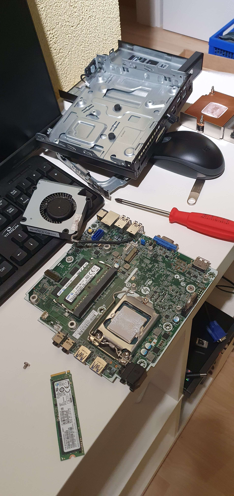

I recently bought two old PCs to get started making my own homelab.
Why?The first question is always, "Why? Why would you do that?"
For me, it is the feeling of creating something new by myself, knowing that the VPN I just connected to works because of me and the two hellish hours I spent searching for a solution to fix it, just to find out that I mistyped an IP address.
HostimgA working server is great, but what now?
Now I have a media server from which I can watch my completely legal downloaded movies.
But services like YouTube and Netflix exist.
Yes, they do. But that is not the point. I didn't create the media server because I wanted to replace YouTube or Netflix, but just because I can.
ConclusionThe conclusion is: It is fun, costs money, time, and even more of your sanity. But in the end, the fun makes it all worth it.